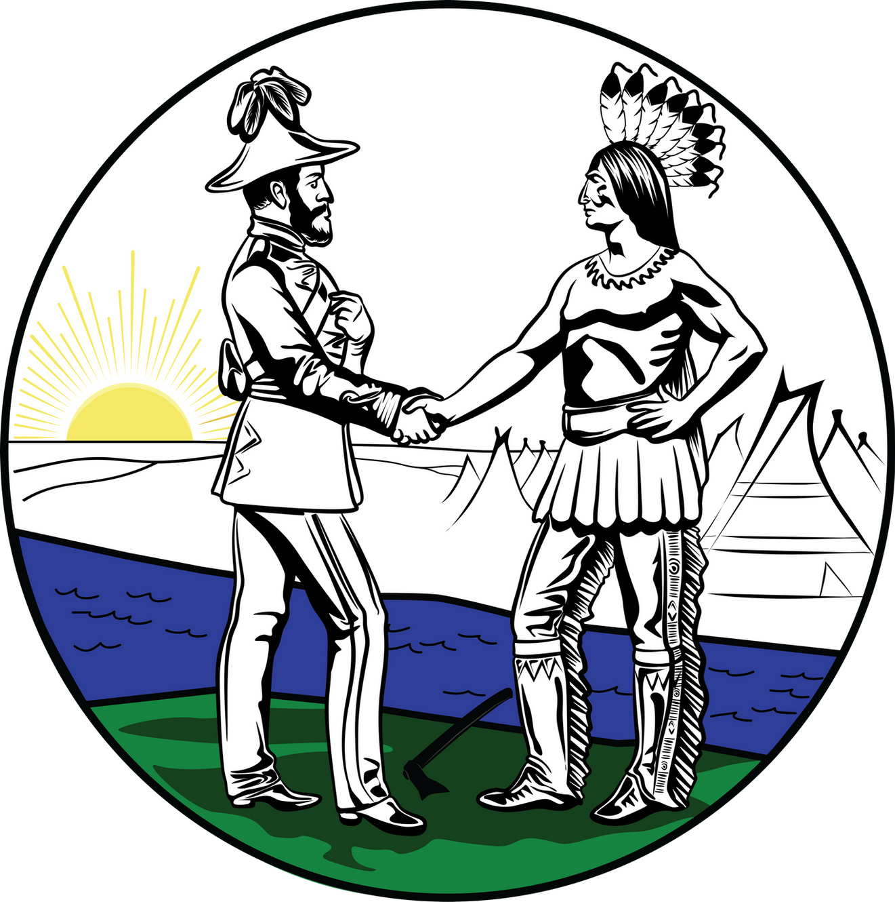

Who made Treaty 5?
Treaty 5 was made between the Canadian government and 2 indeginous peoples, the Ojibwe and the Swampy Cree!
What Did they promise?
When the treaty was created, the government promised to give the Indigenous people special lands, called reserves, where they can hunt, fish, and trap. They also promised to give them some things to help, like food, tools, and a tiny bit of money. The government said they would also give the leaders and the people some gifts, and there would be money given every year.
What is different about this treaty?
The only really big different thing about this treaty is that the people sadly did not get as much money, food, and tools like other treaties.
Why Is Treaty 5 Important?
Treaty 5 is a very important part of the history of the people who live in the Lake Winnipeg area. It helped to set up reserves where the Indigenous peoples could live and continue their traditions. It's also important because it shows how the government and the Indigenous peoples tried to make an agreement to live together peacefully. Today, treaty 5 is still a thing, with things like the and still affects the indeginous peoples like Urban Reserves. These are special lands in cities for Indigenous people, like the Kapyong Urban Reserve in Winnipeg which offers places for some treaty 5 members to live.